Exploring Rajasthan’s Hidden Forest Treasures
Rajasthan, known worldwide for its vast desert landscapes and opulent palaces, is a state that holds more secrets than its golden dunes. Among these are its lush and thriving forests, which offer a unique contrast to the arid image often associated with the region. These green oases, scattered across the state, are not just refuges for wildlife but also hold cultural, historical, and ecological significance. Let’s embark on a journey to discover these mesmerizing forests, each with its unique charm.
1. Ranthambore National Park: The Crown Jewel of Rajasthan’s Forests
Ranthambore National Park
Located in southeastern Rajasthan, Ranthambore National Park is perhaps the most famous of the state’s forests. Spread over 1,334 square kilometers, this park is a wildlife enthusiast’s dream.
Key Highlights:
- Wildlife: Home to the majestic Bengal tiger, Ranthambore is also inhabited by leopards, striped hyenas, marsh crocodiles, and over 300 bird species. Visitors can spot sambar deer grazing near water bodies and monitor lizards basking in the sun.
- Historical Significance: The park also houses the ancient Ranthambore Fort, a UNESCO World Heritage site. Built in the 10th century, the fort offers a glimpse into Rajasthan’s royal past.
- Safari Experience: The thrilling jeep and canter safaris take visitors deep into the heart of the jungle, providing a rare chance to see tigers in their natural habitat.
Best Time to Visit:
The park is best visited from October to April when the weather is pleasant, and tiger sightings are frequent.
2. Mount Abu Wildlife Sanctuary: Rajasthan’s Green Paradise
Mount Abu Wildlife Sanctuary
Mount Abu, the only hill station in Rajasthan, boasts a sanctuary that’s a haven of tranquility and biodiversity.
Key Highlights:
- Biodiversity: The sanctuary is home to species like the Indian leopard, sloth bear, pangolin, and over 250 bird species. The rare Delphinium flower blooms here, adding to the sanctuary’s allure.
- Scenic Beauty: With its cool climate and lush greenery, the sanctuary offers stunning views of the Aravalli hills.
- Cultural Significance: The Dilwara Temples, located nearby, are a marvel of Jain architecture and attract visitors from around the world.
Adventure Tip:
Embark on a trekking expedition through the sanctuary’s dense woods to explore its hidden waterfalls and panoramic viewpoints.
3. Kumbhalgarh Wildlife Sanctuary: A Blend of History and Wilderness
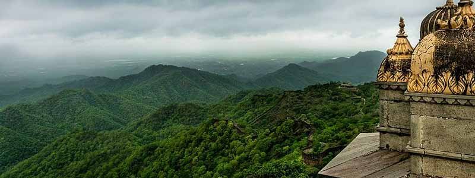Kumbhalgarh Wildlife Sanctuary
Surrounding the iconic Kumbhalgarh Fort, this sanctuary offers a unique mix of history and natural beauty.
Key Highlights:
- Diverse Wildlife: Visitors can spot wolves, jackals, and jungle cats, alongside bird species like the grey junglefowl and golden oriole.
- Historical Context: The sanctuary’s proximity to the fort makes it a perfect spot for history buffs and nature lovers alike.
- Nature Trails: Kumbhalgarh offers guided treks, allowing visitors to explore its pristine beauty on foot.
Don’t Miss:
The light and sound show at Kumbhalgarh Fort, which narrates the tales of Rajasthan’s valor and grandeur.
4. Keoladeo National Park: A Birdwatcher’s Paradise
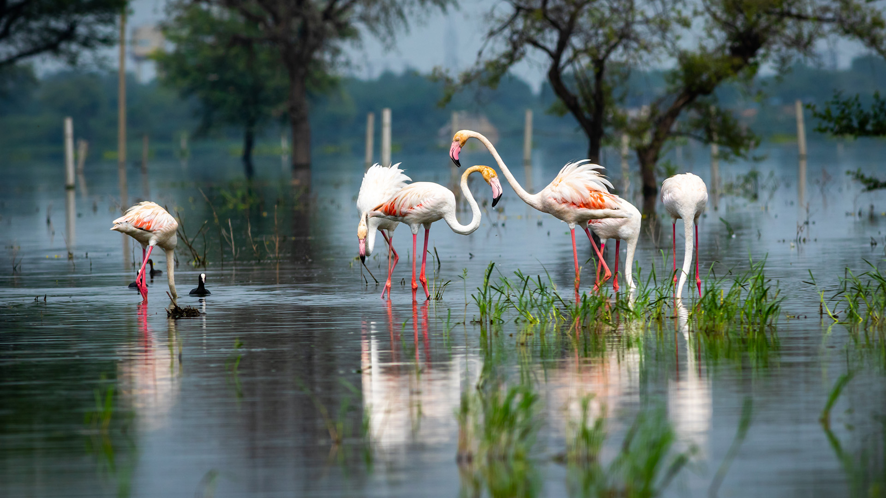Keoladeo National Park
Formerly known as Bharatpur Bird Sanctuary, this UNESCO World Heritage site is a must-visit for bird enthusiasts.
Key Highlights:
- Avian Diversity: The park hosts over 370 species of birds, including migratory birds like Siberian cranes, pelicans, and flamingos.
- Eco-Friendly Exploration: Explore the park on foot, by bicycle, or in eco-friendly rickshaws guided by knowledgeable locals.
- Wetland Wonders: The park’s wetlands create a stunning backdrop for photography and relaxation.
Visitor Insight:
Plan your visit during the winter months when migratory birds flock to the park.
5. Desert National Park: A Unique Ecosystem
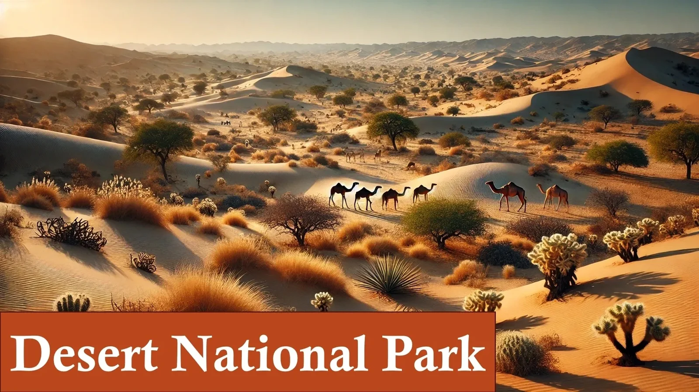Desert National Park
Located near Jaisalmer, this park showcases the beauty of desert flora and fauna.
Key Highlights:
- Wildlife:Home to the endangered Great Indian Bustard, foxes, and monitor lizards.
- Sand Dunes: A mix of rugged cliffs and golden dunes..
- Cultural Appeal: Proximity to Jaisalmer adds historical charm.
Best of visit:
October to March for a comfortable exploration of the desert.
6. Darrah National Park
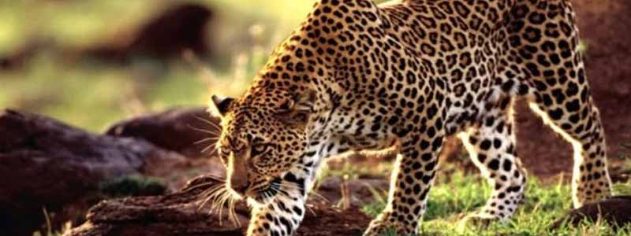Darrah National Park
Once a hunting ground for royal families, this park is now a haven for wildlife.
Key Highlights:
- Wildlife: Wolves, chinkaras, and wild boars.
- Scenic Beauty: Lush greenery amidst hills.
- Historical Context: Royal hunting lodges nearby.
Best Time to Visit: October to March.
7. Jhalana Leopard Safari Park
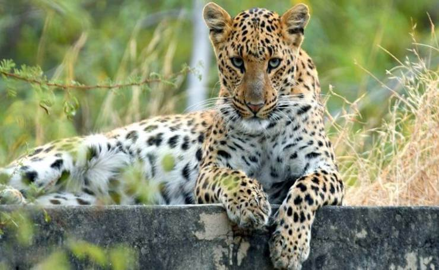Jhalana Leopard Safari Park
Located near Jaipur, this park is famous for its leopard sightings.
Key Highlights:
- Wildlife: Leopards, nilgai, and hyenas.
- Close Proximity: Easily accessible from Jaipur city.
- Photography: A haven for wildlife photographers.
Best Time to Visit: October to May.
8. Van Vihar Wildlife Sanctuary
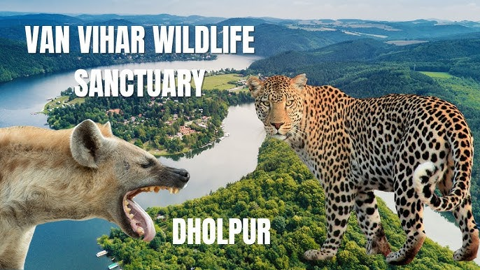Van Vihar Wildlife Sanctuary
Located near Dholpur, this sanctuary is a lesser-known gem of Rajasthan.
Key Highlights:
- Wildlife: Leopards, hyenas, and sloth bears.
- Historical Significance: Proximity to the Machkund Temple and other historical sites.
- Tranquility: A peaceful retreat for nature lovers.
Best Time to Visit: November to March.
9. Bhensrodgarh Wildlife Sanctuary
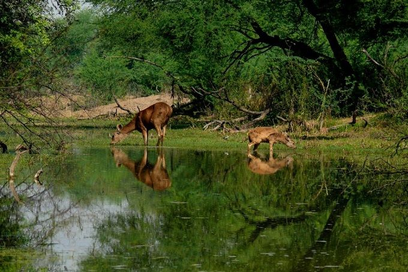Bhensrodgarh Wildlife Sanctuary
Located in the Chittorgarh district, this sanctuary is known for its tranquil atmosphere and scenic beauty.
Key Highlights:
- Wildlife: Chinkaras, wild boars, and jackals.
- Landscape: Dense forests and the Chambal River flowing through the sanctuary.
- Bird Watching: Home to various migratory and resident bird species.
Best Time to Visit: November to March.
10. Kailadevi Wildlife Sanctuary
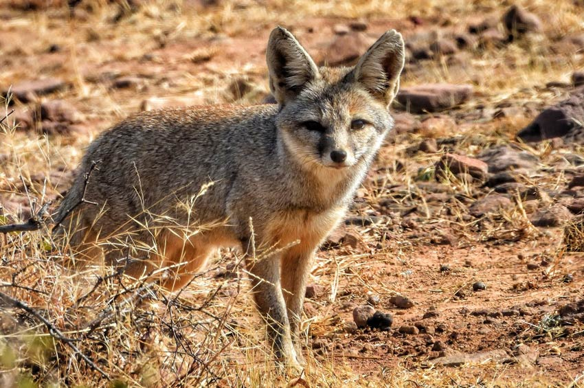Kailadevi Wildlife Sanctuary
A part of the Ranthambore Tiger Reserve, Kailadevi is a peaceful sanctuary known for its biodiversity.
Key Highlights:
- Wildlife: Tigers, wild boars, and sambars.
- Cultural Connection: The Kaila Devi Temple, a popular pilgrimage site, is located nearby.
- Natural Beauty: Rolling hills and riverbeds enhance the sanctuary's charm.
Best Time to Visit: October to March.
11. Tal Chhapar Wildlife Sanctuary
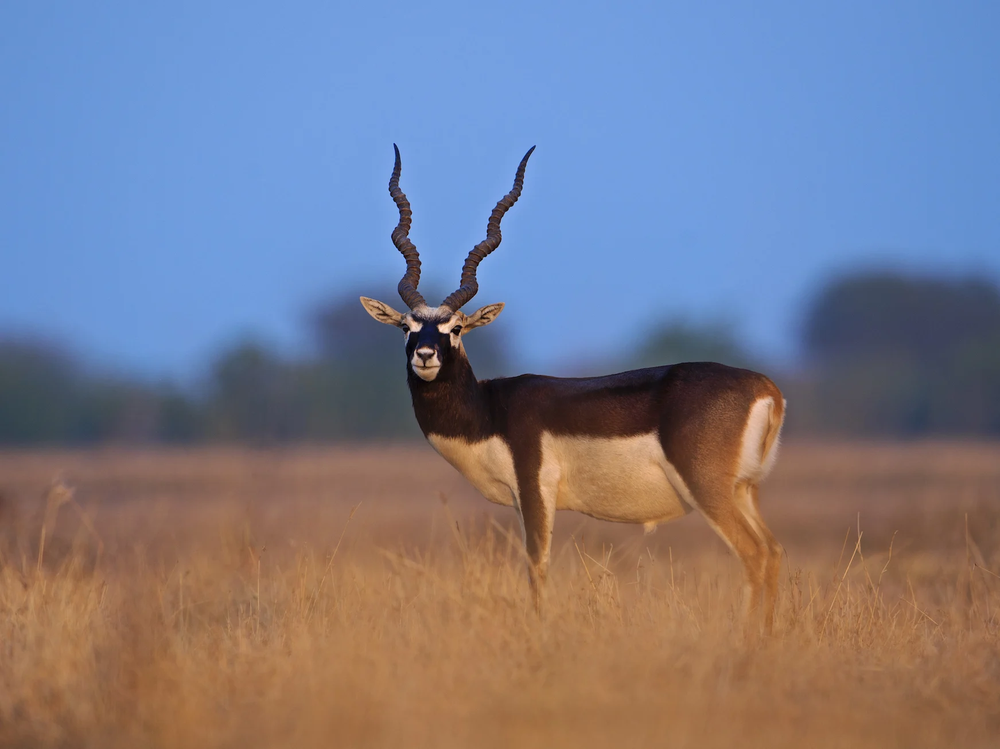Tal Chhapar Wildlife Sanctuary
This sanctuary in the Churu district is famous for its grasslands and blackbuck population.
Key Highlights:
- Wildlife: Blackbucks, desert foxes, and migratory birds like harriers and demoiselle cranes.
- Grassland Ecosystem: Known as the savannah of Rajasthan.
- Photography: Ideal for capturing wildlife and scenic landscapes.
Best Time to Visit: September to March.
12. Sita Mata Wildlife Sanctuary
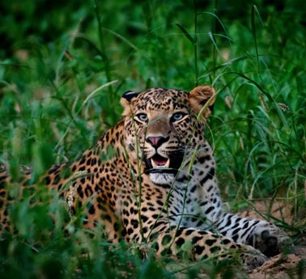Sita Mata Wildlife Sanctuary
A dense forest located in Pratapgarh, named after the mythological Sita.
Key Highlights:
- Flora: Mixed deciduous forest with rare medicinal plants.
- Wildlife: Flying squirrels, sloth bears, and leopards.
- Mythological Connection: Associated with Ramayana legends.
Best Time to Visit: October to March.
13. Sariska Tiger Reserve: A Resilient Ecosystem
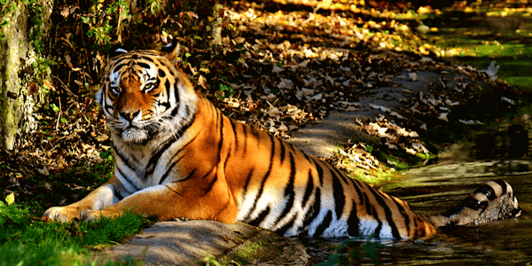Sariska Tiger Reserve
Nestled in the Alwar district, Sariska Tiger Reserve is a testament to nature’s resilience. Once facing severe ecological challenges, the reserve is now a thriving sanctuary.
Key Highlights:
- Flora and Fauna: Dominated by dry deciduous forests, Sariska’s landscape is home to tigers, leopards, wild boars, and an array of bird species like the crested serpent eagle and Indian peafowl.
- Cultural Connection: The reserve is dotted with ancient temples, such as the Neelkanth Temple, which adds a spiritual touch to the wilderness.
- Unique Safaris: Unlike other reserves, Sariska allows night safaris, giving visitors a chance to witness nocturnal wildlife activity.
Visitor Tip:
Combine your visit with a trip to the nearby Bhangarh Fort, often hailed as one of India’s most mysterious and haunted locations.
Travel Tips for Forest Explorers
- Plan Your Visit: Book safaris and accommodations in advance, especially during peak seasons.
- Respect Nature: Avoid littering and follow all guidelines provided by forest authorities.
- Dress Appropriately: Wear comfortable clothing and sturdy shoes suitable for forest terrain.
- Carry Essentials: Bring water, sunscreen, and insect repellent.
- Hire Guides: Local guides provide valuable insights into the region’s history, wildlife, and culture.
Conclusion
Rajasthan’s forests are a testament to the state’s diverse natural beauty. Beyond the sand dunes and royal palaces lies a world of verdant jungles, exotic wildlife, and serene landscapes waiting to be explored. Whether you’re a wildlife enthusiast, a history buff, or a nature lover, these forests promise an unforgettable experience. So pack your bags and set out to uncover the green heart of Rajasthan!